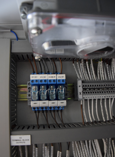
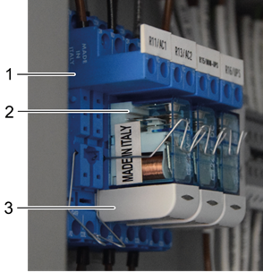

Relay - Removal
Removal of the
Relay
.
Open the front doors of the upmast cabinet to get access to the relays (see
Figure 1
).
Figure 1.
Location of relays

To remove the two middle relays it is necessary to remove the left or right outer relay first.
Pull the relay approximately 5 mm out at the lower site (see item 2 in
Figure 2
).
Figure 2.
Relay

1
Relay base
2
Relay
3
Capacitor
Carefully remove the capacitor (see item 3 in
Figure 2
).
Swing the spring down.
Remove the relay from the base.